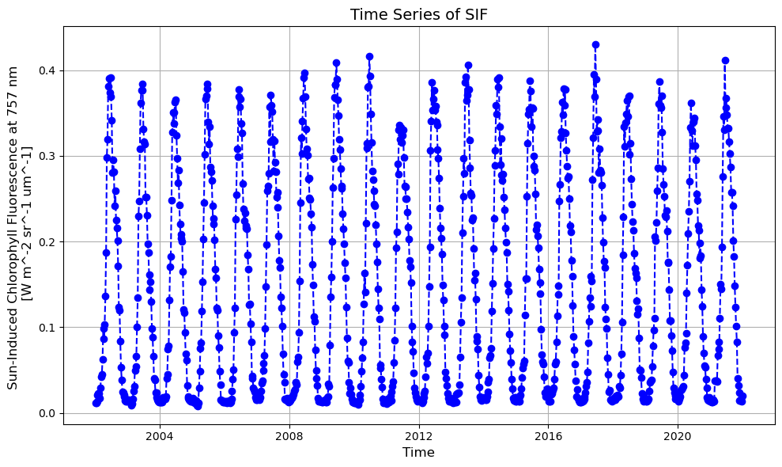
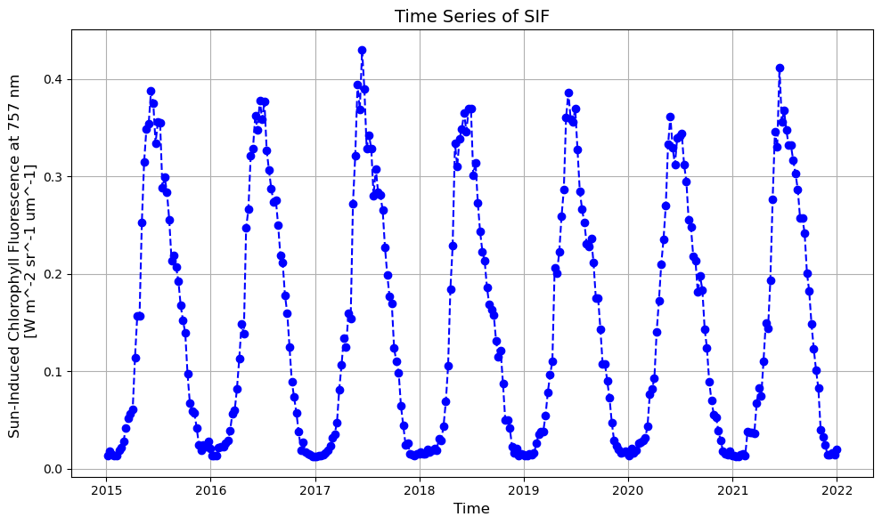
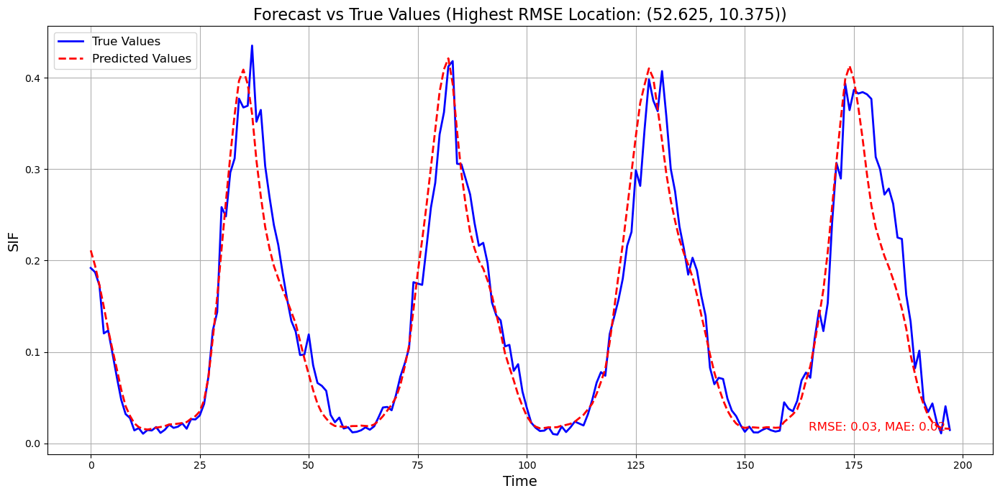
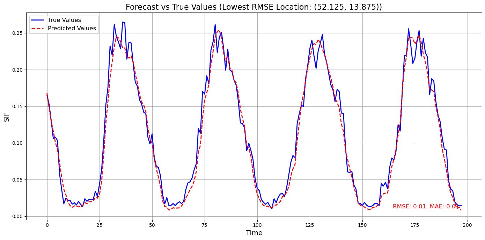

import sysimport osimport geopandas as gpdimport xarray as xrimport rioxarray as rioimport json# Add the parent directory to sys.pathsys.path.append(os.path.abspath(os.path.join('scripts')))# from scripts.config import *from scripts.utils import create_cube_subset, create_pathsfrom scripts.load_aux_data_01 import load_aux_datafrom scripts.cube_preprocessing_02 import cube_preprocessfrom scripts.base_analysis_03 import base_analysis, change_plot, plot_timeseriesfrom scripts.config import variablesfrom scripts.modelling_functions import plot_multiple_results;import matplotlib.pyplot as plt# Write data to disk set to Falsewrite_data =Falsedef plot_multiple_results(results_dict, time_index =None): num_plots =len(results_dict) num_cols =2 num_rows = (num_plots +1) // num_cols fig, axes = plt.subplots(num_rows, num_cols, figsize=(17, num_rows *7))if num_rows * num_cols >1: axes = axes.flatten() # Flatten the axes array for easier iterationelse: axes = [axes] # Ensure axes is iterablefor i, (lat_lon, data_dict) inenumerate(results_dict.items()): ax = axes[i] testY = data_dict['results']['true_values'] forecasts = data_dict['results']['predicted_values'] mae = data_dict['evaluation']['mae'] rmse = data_dict['evaluation']['rmse']# Assuming lat_lon keys are in the format "(lat, lon)" and need to be converted from string lat, lon =eval(lat_lon) # Convert the string key back to tuple if necessary# Generate a time index from the length of the testY data# time_index = range(len(testY)) ax.plot(time_index, testY, label="Actual") ax.plot(time_index, forecasts, label="Predicted") ax.set_title(f"Lat: {lat}, Lon: {lon}") ax.set_xlabel("Time") ax.set_ylabel("Value") ax.legend() ax.grid(True)# Add MSE to the corner ax.text(0.95, 0.05, f"RMSE: {rmse:.2f}, MAE: {mae:.2f}", verticalalignment='bottom', horizontalalignment='right', transform=ax.transAxes, color='red', fontsize=12)# Adjust the layout to prevent overlap and make sure all plots are visible plt.tight_layout() plt.show()def plot_forecasts_from_dict(results_dict):""" This function takes a dictionary containing model results and creates plots for the two locations with the highest and two locations with the lowest RMSE values. Args: results_dict (dict): Dictionary containing model results with true and predicted values. Returns: None """# Extract RMSEs and corresponding locations rmse_values = {loc: data['evaluation']['rmse'] for loc, data in results_dict.items()}# Sort locations by RMSE sorted_locations =sorted(rmse_values, key=rmse_values.get)# Find two locations with highest and two with lowest RMSE lowest_rmse_locations = sorted_locations[:2] highest_rmse_locations = sorted_locations[-2:]print(f'Locations with lowest RMSE: {lowest_rmse_locations}, RMSEs: {[rmse_values[loc] for loc in lowest_rmse_locations]}')print(f'Locations with highest RMSE: {highest_rmse_locations}, RMSEs: {[rmse_values[loc] for loc in highest_rmse_locations]}')# Function to plot true vs predicted valuesdef plot_forecast(true_values, predicted_values, title): plt.figure(figsize=(14, 7)) plt.plot(true_values, label='True Values', color='blue', linewidth=2) plt.plot(predicted_values, label='Predicted Values', color='red', linestyle='--', linewidth=2) plt.title(title, fontsize=16) plt.xlabel('Time', fontsize=14) plt.ylabel('SIF', fontsize=14) plt.legend(fontsize=12) plt.grid(True) plt.tight_layout() plt.show()# Plot for locations with lowest RMSEfor loc in lowest_rmse_locations: true_values = results_dict[loc]['results']['true_values'] predicted_values = results_dict[loc]['results']['predicted_values'] plot_forecast( [val[0] for val in true_values], [val[0] for val in predicted_values],f'Forecast vs True Values (Lowest RMSE Location: {loc})' )# Plot for locations with highest RMSEfor loc in highest_rmse_locations: true_values = results_dict[loc]['results']['true_values'] predicted_values = results_dict[loc]['results']['predicted_values'] plot_forecast( [val[0] for val in true_values], [val[0] for val in predicted_values],f'Forecast vs True Values (Highest RMSE Location: {loc})' )
2024-07-28 12:22:16.639184: I external/local_tsl/tsl/cuda/cudart_stub.cc:32] Could not find cuda drivers on your machine, GPU will not be used.
2024-07-28 12:22:16.641545: I external/local_tsl/tsl/cuda/cudart_stub.cc:32] Could not find cuda drivers on your machine, GPU will not be used.
2024-07-28 12:22:16.677667: I tensorflow/core/platform/cpu_feature_guard.cc:210] This TensorFlow binary is optimized to use available CPU instructions in performance-critical operations.
To enable the following instructions: AVX2 FMA, in other operations, rebuild TensorFlow with the appropriate compiler flags.
2024-07-28 12:22:17.475964: W tensorflow/compiler/tf2tensorrt/utils/py_utils.cc:38] TF-TRT Warning: Could not find TensorRT
Code
def plot_multiple_results(results_dict, keys_to_plot=None, time_index=None):# If no specific keys are provided, plot all entries in the dictionaryif keys_to_plot isNone: keys_to_plot =list(results_dict.keys()) num_plots =len(keys_to_plot) num_cols =2 num_rows = (num_plots +1) // num_cols fig, axes = plt.subplots(num_rows, num_cols, figsize=(17, num_rows *7))if num_rows * num_cols >1: axes = axes.flatten() # Flatten the axes array for easier iterationelse: axes = [axes] # Ensure axes is iterablefor i, lat_lon inenumerate(keys_to_plot): ax = axes[i] data_dict = results_dict[lat_lon] testY = data_dict['results']['true_values'] forecasts = data_dict['results']['predicted_values'] mae = data_dict['evaluation']['mae'] rmse = data_dict['evaluation']['rmse']# Assuming lat_lon keys are in the format "(lat, lon)" and need to be converted from string lat, lon =eval(lat_lon) # Convert the string key back to tuple if necessary# Generate a time index from the length of the testY data if not providedif time_index isNone: time_index =range(len(testY)) ax.plot(time_index, testY, label="Actual") ax.plot(time_index, forecasts, label="Predicted") ax.set_title(f"Lat: {lat}, Lon: {lon}") ax.set_xlabel("Time") ax.set_ylabel("Value") ax.legend() ax.grid(True)# Add RMSE and MAE to the corner ax.text(0.95, 0.05, f"RMSE: {rmse:.2f}, MAE: {mae:.2f}", verticalalignment='bottom', horizontalalignment='right', transform=ax.transAxes, color='red', fontsize=12)# Adjust the layout to prevent overlap and make sure all plots are visible plt.tight_layout() plt.show()
1.2 Setup
First we setup the data path and use create_paths() from utils to create paths necessary throughout the analysis.
Second we use create_subset() to create a subset of the Earth System Data Cube, croped to:
# Create a data directorydata_path ="data"os.makedirs(data_path, exist_ok=True)# Create paths to the datagermany_shp_path, corine_file_path, cube_sample_path, cube_crop_path, cube_crop_mask_path = create_paths(data_path=data_path)# Create a subset of the Earth System Data Cube, containing only relevant variables and the desired spatial and temporal extentcube_subset = create_cube_subset()print(cube_subset)
<xarray.Dataset> Size: 30MB
Dimensions: (time: 920, lat: 31, lon: 37)
Coordinates:
* lat (lat) float64 248B 47.38 47.62 47.88 ... 54.62 54.88
* lon (lon) float64 296B 5.875 6.125 6.375 ... 14.62 14.88
* time (time) datetime64[ns] 7kB 2002-01-05 ... 2021-12-31
spatial_ref int64 8B 0
Data variables:
sif_gosif (time, lat, lon) float32 4MB dask.array<chunksize=(222, 31, 25), meta=np.ndarray>
evaporation_era5 (time, lat, lon) float32 4MB dask.array<chunksize=(222, 31, 25), meta=np.ndarray>
precipitation_era5 (time, lat, lon) float32 4MB dask.array<chunksize=(222, 31, 25), meta=np.ndarray>
radiation_era5 (time, lat, lon) float32 4MB dask.array<chunksize=(222, 31, 25), meta=np.ndarray>
air_temperature_2m (time, lat, lon) float32 4MB dask.array<chunksize=(222, 31, 25), meta=np.ndarray>
max_air_temperature_2m (time, lat, lon) float32 4MB dask.array<chunksize=(222, 31, 25), meta=np.ndarray>
min_air_temperature_2m (time, lat, lon) float32 4MB dask.array<chunksize=(222, 31, 25), meta=np.ndarray>
Attributes: (12/23)
Conventions: CF-1.9
acknowledgment: All ESDC data providers are acknowledged insi...
contributor_name: ['University of Leipzig', 'Max Planck Institu...
contributor_url: ['https://www.uni-leipzig.de/', 'https://www....
creator_name: ['University of Leipzig', 'Brockmann Consult ...
creator_url: ['https://www.uni-leipzig.de/', 'https://www....
... ...
publisher_url: https://www.earthsystemdatalab.net/
time_coverage_end: 2021-12-31T00:00:00.000000000
time_coverage_start: 1979-01-05T00:00:00.000000000
time_period: 8D
time_period_reported_day: 5.0
title: Earth System Data Cube (ESDC) v3.0.1
1.3 Downloading auxillary data
The first part of the analysis is to download and preprocess all the necassaty auxillary data:
download german border shapefile
download and preprocess Corine data (for the forest mask) and use the border data to define the AOI
create sif sample tif for spatial resolution and transform (used later to resample corine data)
# Crop the cube to the extent of Germany and mask it with the Corine landcover data (50% forest cover)cube_subset_crop, cube_subset_mask = cube_preprocess( cube_subset, germany_gpd, corine_file_path, cube_sample_path, out_path_crop=cube_crop_path, out_path_mask=cube_crop_mask_path, all_touched=True, write=write_data )
Preprocessing cube
Clipping cube to Germany border
Calculate forest cover percentage over cube grid
1.5 Basic Analysis of SIF-Data
The following part will
Plot and save the timeseries of the mean SIF using the masked cube
Perform a change detection by calculating the summer mean for each year and the change for the year 2018 to the baseline up to 2017
Resulting Plots:
Time-Series of SIF, considering only cells with more than 50% forest cover in 2000
Difference SIF 2018 to mean of 2002 - 2017 over all cells in germany
Code
# Calculate the temporal changes in the variables summer_sif_mean_cube, summer_mean_to_2017, changes = base_analysis(cube_subset_crop, years=[2018, 2019])# Create the results directoryos.makedirs(os.path.join("results", "figures"), exist_ok=True)# Calculate the summer mean for each year and the change compared to the baseline up to 2017summer_mean_cube, summer_mean_to_2017, changes = base_analysis(cube_subset_crop, years=[2018, 2019])# Select only year 2018summer_mean_2018 = summer_sif_mean_cube.sel(year=2018)
Plot Sif Time series (mean over masked cells in germany)
Code
# Save plot of timeseries:plot_timeseries(cube_subset_mask, save_path = os.path.join("results", "figures", "timeseries_full.png"))plot_timeseries(cube_subset_mask, time_range= ["2015-01-01", "2022-12-31"], save_path = os.path.join("results", "figures", "timeseries_recent.png"))


1.6 Modelling results
Code
# Reading the results and evaluation from the filewithopen("results/modelling/final/results_full_local_auto_l30.json", 'r') asfile: results_dict = json.load(file)
Code
rmse_values = {loc: data['evaluation']['rmse'] for loc, data in results_dict.items()}# Find locations with highest and lowest RMSEhighest_rmse_location =max(rmse_values, key=rmse_values.get)lowest_rmse_location =min(rmse_values, key=rmse_values.get)print(f'Location with highest RMSE: {highest_rmse_location}, RMSE: {rmse_values[highest_rmse_location]}')print(f'Location with lowest RMSE: {lowest_rmse_location}, RMSE: {rmse_values[lowest_rmse_location]}')# Extracting true and predicted values for these locationstrue_values_high_rmse = results_dict[highest_rmse_location]['results']['true_values']predicted_values_high_rmse = results_dict[highest_rmse_location]['results']['predicted_values']true_values_low_rmse = results_dict[lowest_rmse_location]['results']['true_values']predicted_values_low_rmse = results_dict[lowest_rmse_location]['results']['predicted_values']# scores for the locationsrmse_high = results_dict[highest_rmse_location]['evaluation']['rmse']mae_high = results_dict[highest_rmse_location]['evaluation']['mae']rmse_low = results_dict[lowest_rmse_location]['evaluation']['rmse']mae_low = results_dict[lowest_rmse_location]['evaluation']['mae']
Location with highest RMSE: (52.625, 10.375), RMSE: 0.030957287177443504
Location with lowest RMSE: (52.125, 13.875), RMSE: 0.012908714823424816
# unction to plot true vs predicted valuesdef plot_forecast(true_values, predicted_values, title, rmse, mae): plt.figure(figsize=(14, 7)) plt.plot(true_values, label='True Values', color='blue', linewidth=2) plt.plot(predicted_values, label='Predicted Values', color='red', linestyle='--', linewidth=2) plt.title(title, fontsize=16) plt.xlabel('Time', fontsize=14) plt.ylabel('SIF', fontsize=14) plt.legend(fontsize=12) plt.grid(True) plt.tight_layout()# add scores to each plot plt.text(0.95, 0.05, f"RMSE: {rmse:.2f}, MAE: {mae:.2f}", verticalalignment='bottom', horizontalalignment='right', transform=plt.gca().transAxes, color='red', fontsize=12) plt.show()# Plot for location with highest RMSEplot_forecast( [val[0] for val in true_values_high_rmse], [val[0] for val in predicted_values_high_rmse],f'Forecast vs True Values (Highest RMSE Location: {highest_rmse_location})', rmse_high, mae_high)# Plot for location with lowest RMSEplot_forecast( [val[0] for val in true_values_low_rmse], [val[0] for val in predicted_values_low_rmse],f'Forecast vs True Values (Lowest RMSE Location: {lowest_rmse_location})', rmse_low, mae_low)


Code
# Call the function with the example dictionaryplot_forecasts_from_dict(results_dict)
![]()